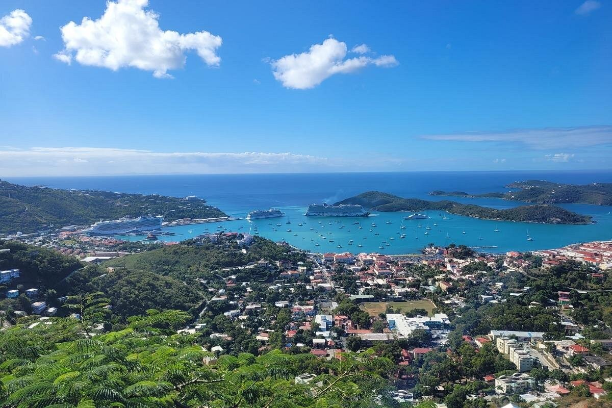
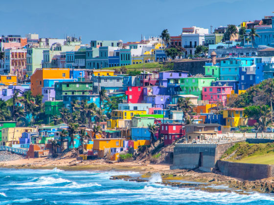

My Favorite Travel Destinations
Below is a detailed guide to some of my most memorable travel destinations. Each location has left a unique impression on me, and I believe they offer wonderful experiences for visitors of all types.
St. Thomas, United States Virgin Islands

Location: Caribbean
Best Time to Visit: December to April
Average Temperature: 75-85°F (24-29°C)
Currency: US Dollar (USD)
Language: English
Visa Required: No (for US citizens)
St. Thomas is one of the most beautiful destinations I have visited. The island offers pristine beaches, crystal-clear waters perfect for snorkeling and diving, and a laid-back Caribbean atmosphere. Magens Bay is consistently rated as one of the best beaches in the world.
Top Attractions
- Magens Bay - perfect for swimming and relaxation
- Blackbeard's Castle - historic lookout tower with panoramic views
- Coral World Ocean Park - interactive marine life experience
- Sapphire Beach - ideal for water sports and snorkeling
- Mountain Top - scenic overlook with 360-degree views
The island's vibrant culture, friendly locals, and diverse cuisine make it an unforgettable destination. Whether you're seeking adventure or relaxation, St. Thomas has something to offer everyone.
Mexico
Location: North America
Best Time to Visit: November to April
Average Temperature: 70-85°F (21-29°C)
Currency: Mexican Peso (MXN)
Language: Spanish
Visa Required: Depends on nationality
Mexico is a country of incredible diversity and rich history. From ancient ruins to modern resorts, from bustling cities to pristine beaches, Mexico offers endless exploration opportunities. The country's culinary traditions are world-renowned, and the people are incredibly welcoming to visitors.
Top Attractions
- Chichen Itza - magnificent Mayan archaeological site
- Cancun - famous beach resort destination
- Playa del Carmen - beautiful coastal town with vibrant nightlife
- Cozumel - premier diving and snorkeling destination
- Mexico City - historic capital with museums and culture
The food, the warmth of the people, and the natural beauty of Mexico make it a destination I continually return to. Each region offers something unique, from tropical beaches to mountain landscapes.
Puerto Rico

Location: Caribbean
Best Time to Visit: December to March
Average Temperature: 75-85°F (24-29°C)
Currency: US Dollar (USD)
Language: Spanish and English
Visa Required: No (for US citizens)
Puerto Rico is a unique Caribbean destination with a fascinating blend of Spanish colonial heritage and modern culture. The island is home to El Yunque National Forest, the only tropical rainforest in the US National Forest System. From the charming streets of Old San Juan to the bioluminescent bays, Puerto Rico offers diverse experiences.
Top Attractions
- El Yunque National Forest - lush rainforest with waterfalls and hiking
- Old San Juan - historic district with colorful colonial architecture
- Vieques Bioluminescent Bay - magical glowing waters
- Flamenco Beach - pristine beach with white sand
- Cueva Ventana - scenic cave with island views
The warmth and resilience of Puerto Rican people, combined with the island's natural beauty and rich culture, make Puerto Rico a truly special destination. It's a place where adventure and relaxation coexist perfectly.
Additional Destinations
I have also had the pleasure of visiting these wonderful locations:
- Dominican Republic - Beautiful beaches and vibrant culture
- Belize - Known for ancient Mayan ruins and coral reefs
- Turks and Caicos - Pristine islands with world-class diving
- Jamaica - Mountains, beaches, and reggae music heritage
Travel Videos and Resources
For more inspiration and detailed information about these destinations, check out these helpful travel resources:
- USVI Tourism Board - Official St. Thomas travel information
- Mexico Tourism Board - Comprehensive Mexico travel guide
- Puerto Rico Tourism - Official Puerto Rico travel site
Note: Click on the links above to explore these destinations further through official tourism websites and travel resources.
Each of these destinations has contributed to my understanding of our beautiful world and its diverse cultures. I encourage everyone to explore these incredible places and create their own memorable travel experiences.